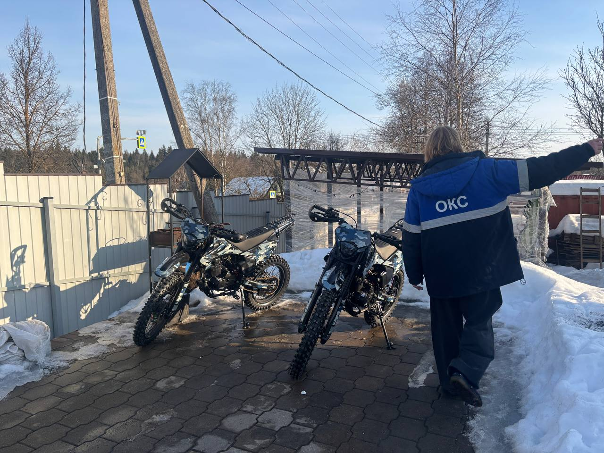
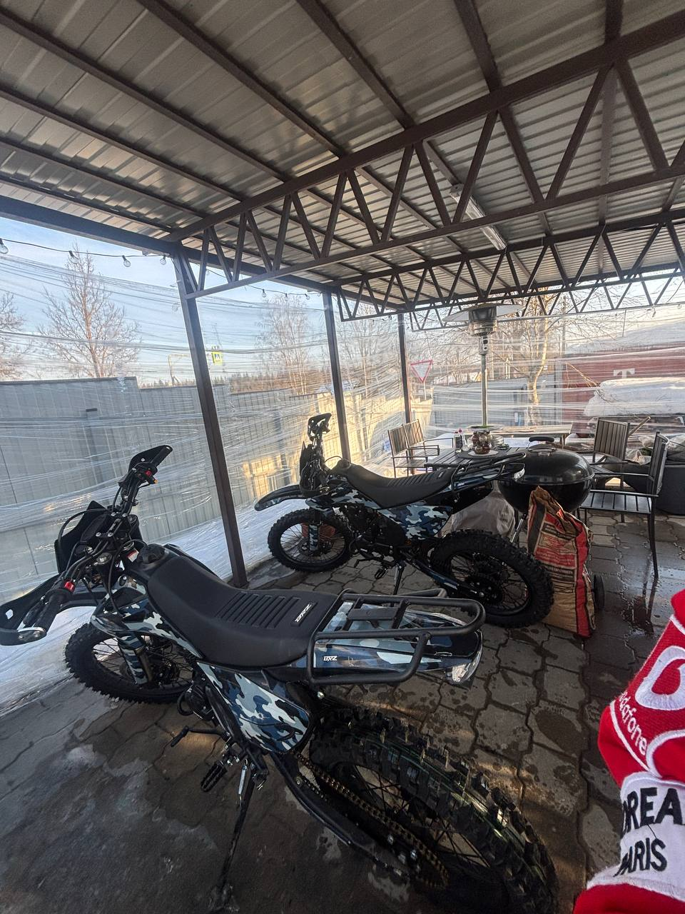
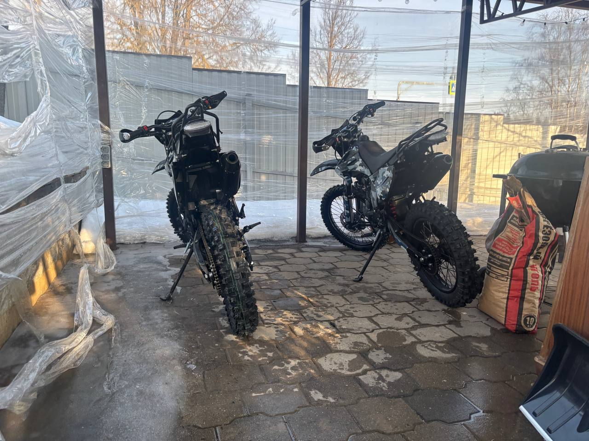
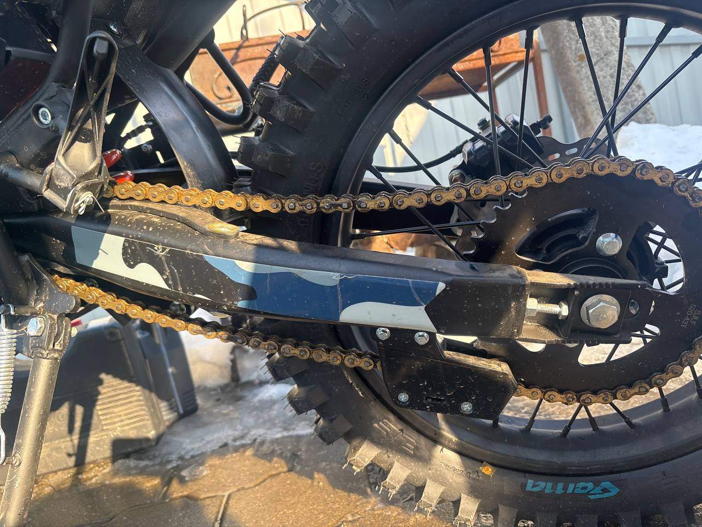
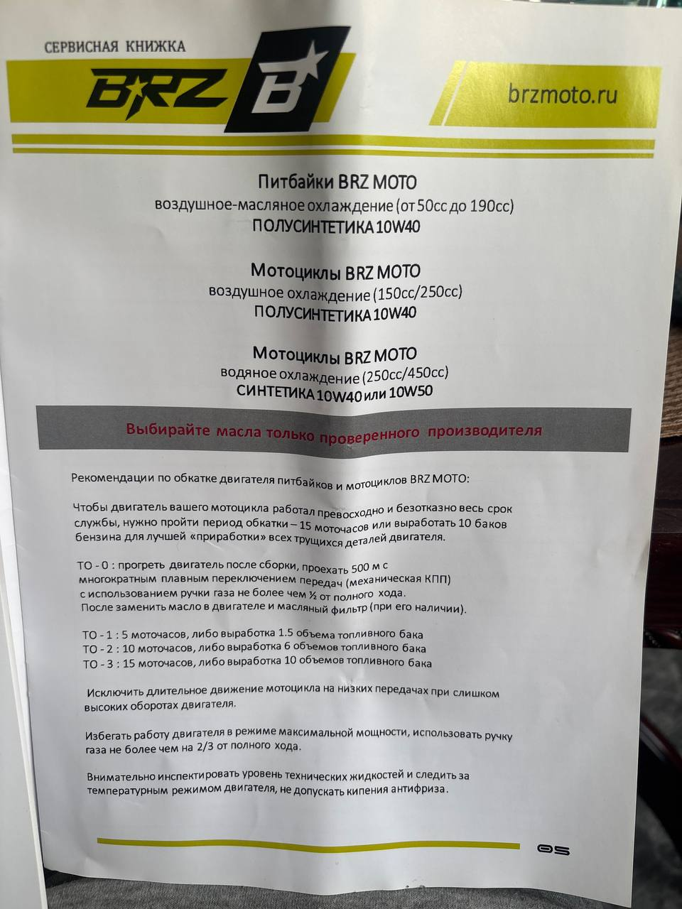

BRZ Z7 CB250 — Полное исследование (×2 мотоцикла)
У меня 2 одинаковых мотоцикла BRZ Z7 CB250. Все расходники и расчёты ниже учитывают это.



Характеристики, сравнение и плюсы/минусы → BRZ-Z7-CB250-specs-comparison
Содержание
- Мои заказы — что купил и что ещё нужно
- Нулевое ТО — пошаговое руководство
- Обкатка двигателя
- Регулировка клапанов
- Чек-лист перед каждым выездом
- Обслуживание после поездки
- Периодическое ТО
- Необходимый инструмент
- Видео-обзоры на YouTube
- Источники
Мои заказы — что купил и что ещё нужно
Заказано (Ozon) — Получено 11 марта
| Товар | Кол-во | Цена | Для чего |
|---|---|---|---|
| Ключ свечной двусторонний 16/18 | 1 | 244 ₽ | Замена/проверка свечи зажигания |
| Щупы для регулировки клапанов (набор №5, 20 шт, 100мм) | 1 | 326 ₽ | Регулировка зазоров клапанов (0.05/0.08-0.10 мм) |
| Фиксатор резьбы LAVR (разъёмный, -60°…+150°C) | 1 | 270 ₽ | Протяжка болтов — ВСЕ болты промазать при нулевом ТО |
| Набор лопаток для разбортовки | 1 | 772 ₽ | Замена камер, снятие/установка покрышек |
| Камера стандартная 1.5мм 120/90 R18 | 1 | 728 ₽ | Запасная камера заднего колеса |
| Очиститель цепи LAVR | 1 | 616 ₽ | Чистка цепи перед смазкой |
| Смазка цепи LAVR | 2 | 1 588 ₽ | Смазка цепи после каждой поездки |
Заказано (Ozon) — В пути
| Товар | Кол-во | Цена | Доставка | Для чего |
|---|---|---|---|---|
| Камера GEMA для заднего колеса | 1 | 519 ₽ | 13 марта | Запас — заднее колесо |
| NGK DPR8EA-9 (4929) свечи | 2 | 934 ₽ | 13-14 марта | Замена свечи при нулевом ТО + запас |
| Камера GEMA задняя/усиленная/эндуро R21 | 2 | 980 ₽ | 12-13 марта | Запас — переднее колесо 21” |
| Щётка для чистки цепи | 1 | 113 ₽ | 15 марта | Чистка цепи (вместе с очистителем LAVR) |
Заказано (Wildberries) — Получено 11 марта
| Товар | Кол-во | Цена | Для чего |
|---|---|---|---|
| WD-40 оригинал 200мл | 1 | — | Универсальная смазка/проникающая жидкость |
| Ключ для спиц натяжки и регулировки | 1 | — | Протяжка и регулировка спиц колёс |
Заказано (Авито) — Доставка ~16 марта
| Товар | Кол-во | Цена | Для чего |
|---|---|---|---|
| Подъёмник для мотоцикла cross/enduro | 2 | 2 × 1 664 ₽ | Подъём мотоцикла для обслуживания (замена колёс, цепь) |
| Пшикер для цепи (универсальный) | 1 | 278 ₽ | Удобное нанесение смазки на цепь |
Заказано (Авито) — Масло
| Товар | Кол-во | Цена | Для чего |
|---|---|---|---|
| Motul 5100 10W-40 4T (4л) | 2 | 2 × 3 300 ₽ | Нулевое ТО + обкатка + штатные замены (на весь 1-й сезон) |
Итого потрачено: ~17 690 ₽ (Ozon ~6 090 + Авито подъёмник+пшикер ~3 945 + Авито масло ~6 600 + WB ~1 050)
Что ещё нужно докупить
Критически важно для нулевого ТО
| Товар | Приоритет | Зачем | Примечание |
|---|---|---|---|
| Моторное масло (докупить!) | 🔴 Критично | 8л куплено, но на 2 мотоцикла нужно ещё 4л | Motul 5100 10W-40 4T — докупить ещё 1 канистру 4л |
| ✅ Не нужен | Сетчатый несъёмный | На 165FMM фильтр сетчатый — просто промыть при замене масла | |
| ✅ Заказана | Пропитка поролонового фильтра | Заказ придёт позже | |
| ✅ Есть дома | Промывка фильтра перед пропиткой | Уайт-спирит | |
| Тормозная жидкость DOT 4 | 🟡 Важно | Проверка/доливка тормозов | Проверить уровень при нулевом ТО |
| Консистентная смазка (литол/ШРУС) | 🟡 Важно | Смазка подшипников, тросов, осей | Для узлов, не контактирующих с маслом |
| ✅ Заказан | Отслеживание интервалов замены масла | Заказ придёт позже | |
| ✅ Заказан | Протяжка болтов с правильным усилием | Заказ придёт позже | |
| ✅ Есть дома | Основной инструмент для ТО | — | |
| ✅ Есть дома | Удобный доступ к крепежу | — | |
| ✅ Есть дома | Руль, рычаги, пластик | — | |
| Защита рук (handguards) | 🟢 Желательно | Защита рук и рычагов при падениях | В комплекте есть рычаги защиты, но полноценные хэндгарды лучше |
Нулевое ТО — пошаговое руководство
Обязательно!
Нулевое ТО необходимо провести перед первой поездкой. Заводское масло — транспортировочное, оно не предназначено для эксплуатации.
Что купить заранее
- Моторное масло — Motul 5100 10W-40 4T, 8л ✅
- Пропитка для воздушного фильтра ✅ заказана
- Смазка для цепи — LAVR (x2) ✅
- Счётчик моточасов ✅ заказан
- Набор щупов (0.05–0.15 мм) — набор №5, 20 шт ✅
- Запасные камеры R18 (x2) + R21 (x2) ✅
- Свечи NGK DPR8EA-9 (x2) ✅
Пошаговый план нулевого ТО
Порядок важен!
Сначала протяжка болтов (пока мотор холодный) → замена масла (прогрев) → всё остальное. Повторить для второго мотоцикла.
Шаг 1. Визуальный осмотр и протяжка болтов с фиксатором резьбы
Инструменты:
- Набор рожково-накидных ключей 8-19 мм
- Набор торцевых головок с трещоткой
- Набор шестигранников
- Отвёртки (крест + плоская)
- Динамометрический ключ (когда приедет)
- Фиксатор резьбы LAVR
- WD-40 (если болт прикипел)
Действия:
- Осмотреть сварные швы рамы — трещины, непровары
- Осмотреть тормозные шланги — подтёки, перегибы, потёртости
- Проверить электропроводку — перетёртые/пережатые провода, оголённые контакты
- Протянуть ВСЕ болты по порядку (каждый открутить → нанести фиксатор резьбы → закрутить обратно):
- Болты крепления двигателя к раме (самые важные!)
- Болты рамы (рулевая колонка, маятник, ось маятника)
- Ось переднего колеса + зажимные болты перьев вилки
- Ось заднего колеса
- Болты крепления тормозных суппортов (перед + зад)
- Болты тормозных дисков
- Болты звёздочки задней
- Болты крепления руля и выноса
- Болты рычагов (тормоз, сцепление)
- Болты подножек (водитель + пассажир)
- Болты глушителя / выпускной системы
- Болты защиты двигателя (пластиковая)
- Болты крепления пластика / обтекателей
- Болты багажника
- Болты крепления зеркал (если есть)
Не перетягивать!
Особенно осторожно с болтами в алюминиевом картере двигателя — резьба срывается легко. Динамометрический ключ сильно поможет.
Шаг 2. Регулировка клапанов (на ХОЛОДНОМ двигателе!)
Инструменты:
- Набор щупов (нужны: 0.05 мм и 0.08-0.10 мм)
- Ключи 8-10 мм (для контргайки)
- Плоская отвёртка (для регулировочного винта)
- Свечной ключ 16/18 (снять свечу для проворота двигателя)
- Торцевой ключ 14-17 мм (для проворота коленвала за генератор)
Действия:
- Убедиться, что двигатель полностью остыл
- Снять крышку клапанного механизма (верхняя часть ГБЦ)
- Выкрутить свечу зажигания (чтобы легче проворачивать)
- Провернуть коленвал до ВМТ (верхняя мёртвая точка) — метки на маховике
- Убедиться, что оба клапана закрыты (коромысла свободны)
- Проверить зазор впускного клапана щупом 0.05 мм — должен входить с лёгким сопротивлением
- Проверить зазор выпускного клапана щупом 0.08-0.10 мм
- Если зазор не в норме: ослабить контргайку → повернуть регулировочный винт → затянуть контргайку → проверить ещё раз
- Установить крышку ГБЦ обратно
Лучше чуть свободнее, чем зажато!
Зажатый клапан = прогар (дорогой ремонт). Лёгкий стук = норма.
Шаг 3. Замена масла
Инструменты и расходники:
- Ключ 17 мм (для сливной пробки — уточнить размер на месте)
- Ёмкость для слива масла (~2 литра)
- Тряпки / ветошь
- Motul 5100 10W-40 4T (~1.2 литра на один мотоцикл)
- Воронка (желательно)
- Перчатки (масло горячее!)
Действия:
- Завести двигатель, прогреть 10-15 минут — активно переключать передачи, чтобы стружка вымылась в масло
- Заглушить, поставить мотоцикл на подъёмник вертикально
- Подставить ёмкость под сливную пробку
- Открутить сливную пробку (ключ 17мм, не уронить пробку в масло!)
- Дождаться полного слива (~5 минут, можно покачать мотоцикл)
- Осмотреть слитое масло — на ТО-0 будет стружка, это нормально
- Промыть сетчатый масляный фильтр (если доступен — он внутри картера)
- Закрутить пробку — аккуратно, не перетянуть! Момент ~20-25 Нм
- Залить новое масло через заливную горловину (~1.0-1.2 литра)
- Подождать 2 минуты, проверить уровень щупом в вертикальном положении (щуп НЕ вкручивать, просто вставить)
- Уровень должен быть между метками MIN и MAX
- Завести двигатель на 1-2 минуты, заглушить, подождать 3 минуты, проверить уровень ещё раз
- Проверить — нет ли подтёков из-под сливной пробки
Шаг 4. Замена свечи зажигания
Инструменты:
- Свечной ключ 16/18 (двусторонний)
- Новая свеча NGK DPR8EA-9
Действия:
- Снять колпачок высоковольтного провода со свечи
- Выкрутить старую свечу свечным ключом (против часовой)
- Осмотреть старую свечу — цвет электрода (норма: светло-коричневый)
- Вкрутить новую свечу NGK DPR8EA-9 от руки до упора
- Дотянуть ключом на 1/2 оборота (новая свеча) — не перетягивать!
- Надеть колпачок высоковольтного провода
Шаг 5. Воздушный фильтр
Инструменты и расходники:
- Отвёртка или ключ (для крышки воздушного короба)
- Уайт-спирит (для промывки)
- Пропитка для воздушного фильтра (когда приедет)
- Ёмкость для промывки (таз)
- Перчатки
- Тряпки
Действия:
- Открутить крышку воздушного короба
- Аккуратно извлечь поролоновый фильтр
- Положить фильтр в ёмкость с уайт-спиритом
- Промять фильтр руками — вымыть грязь и заводскую пропитку
- Повторить 2-3 раза до чистого уайт-спирита
- Полностью высушить фильтр (не отжимать — положить, дать высохнуть, ~1-2 часа)
- Нанести пропитку для воздушного фильтра — равномерно промять, чтобы весь поролон пропитался
- Слегка отжать лишнее (без скручивания)
- Установить фильтр обратно в короб
- Закрутить крышку
НЕ использовать бензин! Он разрушает поролон.
Шаг 6. Цепь — натяжение и смазка
Инструменты и расходники:
- Ключ 17-19 мм (для гайки оси заднего колеса)
- Ключ 10-12 мм (для болтов натяжителя)
- Очиститель цепи LAVR
- Щётка для чистки цепи
- Смазка цепи LAVR
- Пшикер для цепи
- Линейка или рулетка
- Тряпки
Текущее состояние (11.03.2026)
Цепь провисает на ~5-6 см — нужно подтянуть! Норма: 3-4 см.

Действия:
- Поставить мотоцикл на подъёмник
- Очистить цепь: нанести очиститель LAVR → пройтись щёткой → протереть тряпкой
- Измерить провис цепи: надавить на цепь посередине между звёздами, замерить ход
- Если провис больше 3-4 см (у тебя сейчас ~5-6 см — нужно тянуть!):
- Ослабить гайку оси заднего колеса (ключ 17-19 мм)
- Закручивать болты натяжения равномерно с обеих сторон (по пол-оборота)
- Проверять провис после каждого пол-оборота
- Когда провис = 3-4 см — стоп
- Проверить, что колесо стоит ровно (метки на маятнике с обеих сторон совпадают)
- Затянуть гайку оси заднего колеса
- Нанести смазку LAVR на внутреннюю сторону цепи (на ролики), медленно вращая колесо
- Дать подсохнуть 10-15 минут
Шаг 7. Проверка и протяжка спиц
Инструменты:
- Ключ для спиц (куплен на WB)
Действия:
- Поднять мотоцикл на подъёмник
- Переднее колесо: простучать все спицы ключом или пальцем
- Звонкий одинаковый звук = ОК
- Глухой звук = спица ослабла
- Подтянуть ослабленные спицы — не более пол-оборота за раз!
- Заднее колесо: повторить то же самое
- Покрутить каждое колесо — проверить, что нет биения (восьмёрки)
Если есть сильная восьмёрка — лучше обратиться к мастеру для правки.
Шаг 8. Проверка тормозов
Инструменты:
- Отвёртка (для крышки бачка тормозной жидкости)
- Тормозная жидкость DOT 4 (при необходимости доливки)
- Фонарик
Действия:
- Проверить уровень тормозной жидкости в бачке переднего тормоза (на руле) — должен быть между MIN и MAX
- Проверить уровень тормозной жидкости заднего тормоза (около педали)
- Долить DOT 4 при необходимости
- Нажать рычаг переднего тормоза — должен быть упругий, без провала
- Нажать педаль заднего тормоза — то же самое
- Визуально осмотреть тормозные колодки (фонарик) — толщина минимум 1.5-2 мм
- Осмотреть тормозные диски — нет ли глубоких борозд или трещин
Шаг 9. Регулировка органов управления
Инструменты:
- Набор шестигранников
- Ключи 8-10 мм
- WD-40 или консистентная смазка (для тросов)
Действия:
- Настроить высоту руля и угол наклона под свой рост
- Настроить положение рычага сцепления — удобно ли дотягиваться
- Настроить положение рычага переднего тормоза
- Проверить ручку газа — плавно поворачивается и возвращается сама при отпускании
- Проверить свободный ход троса сцепления — 2-3 мм на рычаге
- Смазать тросы — капнуть WD-40 или консистентную смазку в оплётку
- Настроить высоту педали заднего тормоза
- Настроить высоту рычага переключения передач
Шаг 10. Финальная проверка
Инструменты: —
Действия:
- Завести двигатель, прогреть 2-3 минуты
- Послушать — нет ли посторонних стуков, звуков
- Проверить, что не подтекает масло
- Проверить работу всех электроприборов: фара, стоп-сигнал, поворотники (если есть), звуковой сигнал
- Проверить давление в шинах (0.8-1.2 атм)
- Заглушить, записать дату ТО-0 в журнал
- Повторить все шаги 1-10 для второго мотоцикла!
Обкатка двигателя
Правило обкатки
Обкатка — это приработка деталей двигателя. От неё зависит ресурс мотора. Период обкатки: 15 моточасов или 10 баков бензина (по сервисной книжке BRZ).
График замены масла при обкатке (официальный BRZ)
Источник: Сервисная книжка BRZ MOTO
Для мотоциклов с воздушным охлаждением (150сс/250сс): полусинтетика 10W-40

| Этап | Когда | Альтернативный отсчёт | Примечание |
|---|---|---|---|
| ТО-0 | Сразу после сборки | Прогреть, проехать 500м | Слить транспортировочное масло, заменить масляный фильтр (при наличии) |
| ТО-1 | 5 моточасов | ~1.5 бака | Будет много стружки — это нормально |
| ТО-2 | 10 моточасов | ~6 баков | Стружки меньше |
| ТО-3 | 15 моточасов | ~10 баков | Обкатка завершена, масло должно быть чистым |
| Далее | Каждые 20 моточасов | — | Штатный режим |
Расход масла на обкатку (×2 мотоцикла)
| Замена | Мото 1 | Мото 2 | Итого расход | Остаток из 8л |
|---|---|---|---|---|
| ТО-0 | 1.2 л | 1.2 л | 2.4 л | 5.6 л |
| ТО-1 (5 мч) | 1.2 л | 1.2 л | 4.8 л | 3.2 л |
| ТО-2 (10 мч) | 1.2 л | 1.2 л | 7.2 л | 0.8 л |
| ТО-3 (15 мч) | 1.2 л | 1.2 л | 9.6 л | -1.6 л ⚠️ |
8 литров масла НЕ ХВАТИТ на обкатку двух мотоциклов!
Нужно ещё минимум 2 литра (лучше докупить ещё 1 канистру 4л — останется на штатные замены после обкатки).
Режим обкатки (первые 15 моточасов, по сервисной книжке BRZ)
Общие правила:
- Ручка газа не более 1/2 хода при ТО-0, не более 2/3 хода далее
- Плавное переключение передач
- Разнообразить обороты — не держать долго на одних
| Период | Газ макс. | Что делать |
|---|---|---|
| ТО-0 (первые 500м) | 1/2 хода | Прогреть, плавно переключать передачи, заглушить, слить масло |
| 0–5 мч | 1/2 хода | Плавная езда, переключать передачи, не раскручивать |
| 5–10 мч | 2/3 хода | Разнообразить обороты, можно чуть активнее |
| 10–15 мч | 2/3 хода | Двигатель почти обкатан, но не крутить в полную |
| После 15 мч | 100% | Обкатка завершена |
Чего нельзя делать при обкатке (по сервисной книжке BRZ)
- ❌ Длительное движение на низких передачах при высоких оборотах
- ❌ Работа двигателя в режиме максимальной мощности
- ❌ Ручка газа более чем на 2/3 от полного хода
- ❌ Перегревать двигатель — следить за температурой
- ❌ Пропускать замену масла
Регулировка клапанов
Для двигателя Zongshen 165FMM / 166FMM
Рекомендуемые зазоры
| Клапан | Зазор |
|---|---|
| Впускной | 0.05 мм |
| Выпускной | 0.08–0.10 мм |
Когда проверять
- При нулевом ТО
- После каждых 500 км или каждого сезона
- При появлении постороннего стука в ГБЦ
Важные советы
- Регулировать на холодном двигателе
- Лучше зазор чуть больше (лёгкий стук), чем меньше (прогар клапана!)
- Заводская сборка часто имеет пережатые клапаны — обязательно проверить при нулевом ТО
- Не верьте продавцам, что “для китайцев стук нормален” — правильно настроенный мотор работает тихо
Чек-лист перед каждым выездом (5 минут)
- Давление в шинах — 0.8-1.2 атм (для бездорожья ближе к 0.8, для асфальта 1.2)
- Ручка газа — плавно возвращается, нет заеданий
- Рычаг сцепления — свободный ход 2-3 мм, плавный
- Тормоза — передний и задний работают, нет проваливания
- Цепь — провис 20-40 мм (3-4 см), есть смазка
- Визуальный осмотр — нет подтёков масла, повреждений
- Уровень масла — по щупу в вертикальном положении
- Бензин — достаточно для маршрута
- Крепёж — руль, колёса, подножки не люфтят
Обслуживание после поездки
Мойка
- Держать сопло 1+ метра от подшипников, рулевой колонки, электроразъёмов
- НЕ направлять струю высокого давления в сальники вилки, ступицы колёс
- Если Kärcher — только на низком давлении или из шланга
Цепь (после каждой поездки)
- Очистить цепь очистителем LAVR + щётка для цепи
- Протереть насухо
- Нанести смазку LAVR на внутреннюю сторону цепи, вращая колесо
- Дать подсохнуть 10-15 минут
Воздушный фильтр (после грязевых поездок)
- Снять фильтр из короба
- Промыть в специальном очистителе (НЕ бензином!)
- Полностью высушить
- Пропитать маслом/пропиткой для фильтров
- Установить обратно
Периодическое ТО
Каждые 10-15 моточасов
- Проверить уровень масла
- Простучать спицы ключом — подтянуть ослабшие (не более пол-оборота за раз)
- Проверить толщину тормозных колодок (минимум 1.5-2 мм)
- Проверить уровень тормозной жидкости
- Осмотреть тормозные диски на износ
Каждые 20 моточасов (после обкатки)
- Замена масла — 1-1.2л мотоциклетного 10W-40
- Проверка/регулировка зазоров клапанов
- Проверка натяжения цепи
- Осмотр тросов газа и сцепления
Каждый сезон / 100 моточасов
- Полная протяжка всех болтов
- Замена свечи зажигания (NGK DPR8EA-9)
- Замена тормозной жидкости
- Смазка подшипников колёс (консистентная смазка)
- Проверка состояния покрышек
- Проверка состояния цепи и звёзд на износ
Необходимый инструмент
Для нулевого ТО и базового обслуживания
| Инструмент | Есть? | Примечание |
|---|---|---|
| Ключ свечной 16/18 | ✅ Куплен | Ozon |
| Щупы для клапанов (набор) | ✅ Куплен | Ozon, набор №5 |
| Ключ для спиц | ✅ Куплен | Wildberries |
| Лопатки для разбортовки | ✅ Куплены | Ozon |
| Подъёмник для мотоцикла | ✅ Куплен (x2) | Авито, доставка 16.03 |
| Набор рожково-накидных ключей 8-19мм | ✅ Есть дома | — |
| Набор торцевых головок с трещоткой | ✅ Есть дома | — |
| Набор шестигранников | ✅ Есть дома | — |
| Отвёртки (крест + плоская) | ✅ Есть дома | — |
| Пассатижи, бокорезы | ✅ Есть дома | — |
| Динамометрический ключ | ✅ Заказан | Заказ придёт позже |
Расходники и химия
| Расходник | Есть? | Примечание |
|---|---|---|
| Моторное масло Motul 5100 10W-40 4T | ✅ Куплено (8л = 2×4л) | Авито, 3 300 ₽/4л. ⚠️ На 2 мотоцикла не хватит — нужно ещё 4л! |
| Смазка цепи LAVR | ✅ Куплена (x2) | Ozon |
| Очиститель цепи LAVR | ✅ Куплен | Ozon |
| Щётка для цепи | ✅ Куплена | Ozon, доставка 15.03 |
| Пшикер для цепи | ✅ Куплен | Авито, доставка 16.03 |
| WD-40 | ✅ Куплен | Wildberries |
| Фиксатор резьбы LAVR | ✅ Куплен | Ozon |
| Свечи NGK DPR8EA-9 | ✅ Куплены (x2) | Ozon, доставка 13-14.03 |
| Камеры запасные R18 | ✅ Куплены (x2) | Ozon |
| Камеры запасные R21 | ✅ Куплены (x2) | Ozon, доставка 12-13.03 |
| Пропитка для воздушного фильтра | ✅ Заказана | Заказ придёт позже |
| Очиститель воздушного фильтра (уайт-спирит) | ✅ Есть дома | Уайт-спирит подходит для промывки |
| Тормозная жидкость DOT 4 | ❌ Проверить | Может быть достаточно с завода |
| Консистентная смазка | ❌ Желательно | Литол или ШРУС |
| Счётчик моточасов | ✅ Заказан | Заказ придёт позже |
Итого: перед нулевым ТО осталось докупить
- Масло Motul 5100 10W-40 — ещё 1 канистра 4л (8л не хватит на 2 мотоцикла)
Пропитка для воздушного фильтра✅ ЗаказанаОчиститель для воздушного фильтра✅ Уайт-спирит есть домаДинамометрический ключ✅ ЗаказанСчётчик моточасов✅ Заказан
Динамометрический ключ — выбор и моменты затяжки
Рекомендация (универсальная)
| Инструмент | Диапазон | Цена | Где | Совместимость |
|---|---|---|---|---|
| Inforce 1/2” 28–210 Н·м | 28–210 Н·м | ~2 500 ₽ | Ozon / WB | BRZ Z7 + Audi A5 3.2 quattro + Citroen Jumpy 1.9d |
Почему 1/2" 28–210 Н·м
- Нижний предел 28 Н·м покрывает резьбу на мото (болты двигателя, ступицы)
- Верхний предел 210 Н·м покрывает колёсные болты Audi A5 (~120 Н·м) и Citroen Jumpy (~160 Н·м)
- Один ключ для всего — не нужен отдельный под каждую машину
Вариант «два ключа» (если хочется точнее под мото):
- 3/8” 5–25 Н·м — для мелкого крепежа мотоцикла (болты крышек, GBK, карбюратора)
- 1/2” 28–210 Н·м — для остального (колёса, двигатель, автомобили)
Моменты затяжки — Zongshen 165FMM (BRZ Z7 CB250)
Осторожно с алюминием
Картер двигателя и крышки — алюминий. Резьба срывается легко. Лучше недотянуть, чем перетянуть.
| Узел | Болт | Момент, Н·м | Примечание |
|---|---|---|---|
| Сливная пробка масла | M12×1.5 | 20–25 | Алюминиевый картер — не перетягивать! |
| Свеча зажигания | M12×1.25 | 20–25 | NGK DPR8EA-9 |
| Болты крепления двигателя к раме | M10 | 40–50 | Главные болты — обязательно с фиксатором |
| Болты крышки головки | M6 | 8–10 | Алюминий — очень осторожно |
| Крышка ГРМ | M6 | 6–8 | |
| Болты крепления звезды | M8 | 25–30 | С фиксатором резьбы |
| Ось переднего колеса | M14 | 50–60 | |
| Ось заднего колеса | M16 | 60–80 | |
| Болты суппорта тормоза | M8 | 25–35 | |
| Болты дисков тормозов | M8 | 15–20 | |
| Крепление руля (клемма) | M8 | 20–25 | |
| Болты подножек | M8–M10 | 25–40 |
Источник моментов
Официальная сервисная документация на двигатель Zongshen 165FMM/166FMM. Аналогичные значения — Honda CG125/150 (на базе которого клонирован мотор).
Как научиться обслуживать самостоятельно
Пошаговый план обучения
- Посмотреть видео: Канал “Шестая Передача” — полная серия по BRZ Z7 CB250 (от распаковки до обслуживания)
- Изучить мотор: Видео Baguvix “Какой китайский мотор лучше” — понять различия 165/166/172FMM
- Обкатка: JAZZMOTO “5 мифов об обкатке” — развенчивает заблуждения
- Замена масла: Видео “Замена масла BSE Z7” (Прохват 52) — идентичный процесс
- Регулировка клапанов: Искать по запросу “регулировка клапанов 165FMM 166FMM”
- Практика: Начать с простого — замена масла, цепь, спицы, затем клапаны
Ключевые правила
Критичные ошибки новичков
- НЕ перетягивать сливную пробку масла — резьба в алюминиевом картере срывается легко
- НЕ использовать автомобильное масло — в нём нет присадок для мокрого сцепления
- НЕ мыть фильтр бензином — разрушает поролон
- НЕ мыть мотоцикл Kärcher в упор — вода попадёт в подшипники и сальники
- ВСЕ болты промазать фиксатором резьбы при нулевом ТО — иначе открутятся на ходу
- НЕ пропускать замену масла при обкатке — стружка убивает мотор
Видео-обзоры на YouTube
Обзоры именно BRZ Z7 CB250
| Видео | Канал | Просмотры | Длительность |
|---|---|---|---|
| Обзор на Мотоцикл BRZ Z7 CB250 | GaunterDim | 4 351 | 3:17 |
| BRZ Z7 CB250 — Распаковка, Сборка и ПОЛНЫЙ ТЕХОСМОТР | Шестая Передача | 1 019 | 27:18 |
| Новинка 2025 BRZ Z7 CB250: Стоит ли брать? | Шестая Передача | 538 | 17:27 |
| BRZ Z7 CB250: Эндуро Покатушки! Отзыв и Мнение | Шестая Передача | 615 | 23:59 |
| МОЙ САМЫЙ ВЫСОКИЙ ЭНДУРО BRZ Z7 CB250: Первый ВЫЕЗД | Шестая Передача | 762 | 14:20 |
Видео по обкатке и ТО
| Видео | Канал | Просмотры | Длительность |
|---|---|---|---|
| BRZ Z7 CB250 — Распаковка, Сборка и ПОЛНЫЙ ТЕХОСМОТР | Шестая Передача | 1 019 | 27:18 |
| 5 МИФОВ об ОБКАТКЕ эндуро МОТОЦИКЛА! | JAZZMOTO | 102 734 | 18:07 |
| Zuum CB250 (та же платформа) | ЭНДУРОДВОР | 28 465 | 26:50 |
| Замена масла BSE Z7 (Zongshen 174) | Прохват 52 | 20 907 | 8:47 |
| BRZ Z7 CB300F — Сборка мотоцикла | BRZMOTO (офиц.) | 431 | 22:33 |
Полный список обзоров и сравнений → Видео-обзоры на YouTube
Журнал обслуживания — заполняемые таблицы
Журнал поездок (заполнять после каждой)
| Дата | Мото (1/2) | Моточасы | Км | Что делал | Замечания |
|---|---|---|---|---|---|
Журнал ТО — Мотоцикл 1
| Дата | ТО | Моточасы | Масло (слито/залито) | Фильтр воздушный | Клапаны | Цепь | Спицы | Тормоза | Болты | Свеча | Примечания |
|---|---|---|---|---|---|---|---|---|---|---|---|
| ТО-0 | 0 | ||||||||||
| ТО-1 | 5 | ||||||||||
| ТО-2 | 10 | ||||||||||
| ТО-3 | 15 | ||||||||||
| Штатное | 35 | ||||||||||
| Штатное | 55 | ||||||||||
| Штатное | 75 | ||||||||||
| Сезонное | 100 |
Журнал ТО — Мотоцикл 2
| Дата | ТО | Моточасы | Масло (слито/залито) | Фильтр воздушный | Клапаны | Цепь | Спицы | Тормоза | Болты | Свеча | Примечания |
|---|---|---|---|---|---|---|---|---|---|---|---|
| ТО-0 | 0 | ||||||||||
| ТО-1 | 5 | ||||||||||
| ТО-2 | 10 | ||||||||||
| ТО-3 | 15 | ||||||||||
| Штатное | 35 | ||||||||||
| Штатное | 55 | ||||||||||
| Штатное | 75 | ||||||||||
| Сезонное | 100 |
Чек-лист перед выездом (печатная версия)
| # | Пункт проверки | Мото 1 | Мото 2 |
|---|---|---|---|
| 1 | Давление в шинах (0.8-1.2 атм) | ||
| 2 | Ручка газа (плавно возвращается) | ||
| 3 | Рычаг сцепления (свободный ход) | ||
| 4 | Тормоза перед/зад (не проваливаются) | ||
| 5 | Цепь (провис 3-4 см, смазка есть) | ||
| 6 | Уровень масла (щуп, вертикально) | ||
| 7 | Визуальный осмотр (подтёки, повреждения) | ||
| 8 | Бензин (достаточно для маршрута) | ||
| 9 | Крепёж (руль, колёса, подножки) |
Чек-лист нулевого ТО (на каждый мотоцикл)
| # | Операция | Мото 1 | Мото 2 |
|---|---|---|---|
| 1 | Визуальный осмотр рамы и сварных швов | ||
| 2 | Протяжка ВСЕХ болтов + фиксатор резьбы | ||
| 3 | Проверка электропроводки | ||
| 4 | Прогрев двигателя 10-15 мин | ||
| 5 | Слив транспортировочного масла | ||
| 6 | Заливка Motul 5100 10W-40 (~1.2л) | ||
| 7 | Проверка уровня масла щупом | ||
| 8 | Промывка воздушного фильтра (уайт-спирит) | ||
| 9 | Сушка воздушного фильтра | ||
| 10 | Пропитка воздушного фильтра | ||
| 11 | Регулировка клапанов (впуск 0.05, выпуск 0.08-0.10) | ||
| 12 | Натяжение цепи (провис 3-4 см) | ||
| 13 | Смазка цепи LAVR | ||
| 14 | Протяжка спиц (обоих колёс) | ||
| 15 | Проверка тормозной жидкости | ||
| 16 | Проверка тормозных колодок | ||
| 17 | Настройка руля и рычагов под рост | ||
| 18 | Проверка тросов (газ, сцепление) | ||
| 19 | Смазка тросов | ||
| 20 | Замена свечи (NGK DPR8EA-9) | ||
| 21 | Проверка давления в шинах |
Чек-лист штатного ТО (каждые 20 моточасов)
| # | Операция | Дата: | Дата: | Дата: | Дата: |
|---|---|---|---|---|---|
| 1 | Замена масла (~1.2л) | ||||
| 2 | Проверка уровня масла | ||||
| 3 | Проверка/регулировка клапанов | ||||
| 4 | Натяжение цепи | ||||
| 5 | Смазка цепи | ||||
| 6 | Промывка воздушного фильтра | ||||
| 7 | Пропитка воздушного фильтра | ||||
| 8 | Протяжка спиц | ||||
| 9 | Проверка тормозных колодок | ||||
| 10 | Проверка тормозной жидкости | ||||
| 11 | Осмотр тросов | ||||
| 12 | Осмотр цепи и звёзд на износ |
Чек-лист сезонного ТО (каждые 100 моточасов / конец сезона)
| # | Операция | Мото 1 | Мото 2 |
|---|---|---|---|
| 1 | Замена масла | ||
| 2 | Полная протяжка всех болтов | ||
| 3 | Замена свечи (NGK DPR8EA-9) | ||
| 4 | Замена тормозной жидкости | ||
| 5 | Смазка подшипников колёс | ||
| 6 | Проверка покрышек на износ | ||
| 7 | Проверка цепи и звёзд на износ | ||
| 8 | Регулировка клапанов | ||
| 9 | Промывка + пропитка фильтра | ||
| 10 | Проверка всех тросов | ||
| 11 | Консервация на зиму (если нужно) |
Источники
- BSE MOTO — FAQ по обслуживанию
- Обкатка и нулевое ТО — pbm54.ru
- china-moto.ru — зазоры клапанов 166FMM
- Обслуживание эндуро для новичков — prokatenduro.ru
- Полные источники и обзоры → Источники
Исследование проведено 2026-03-11 с помощью Claude Code